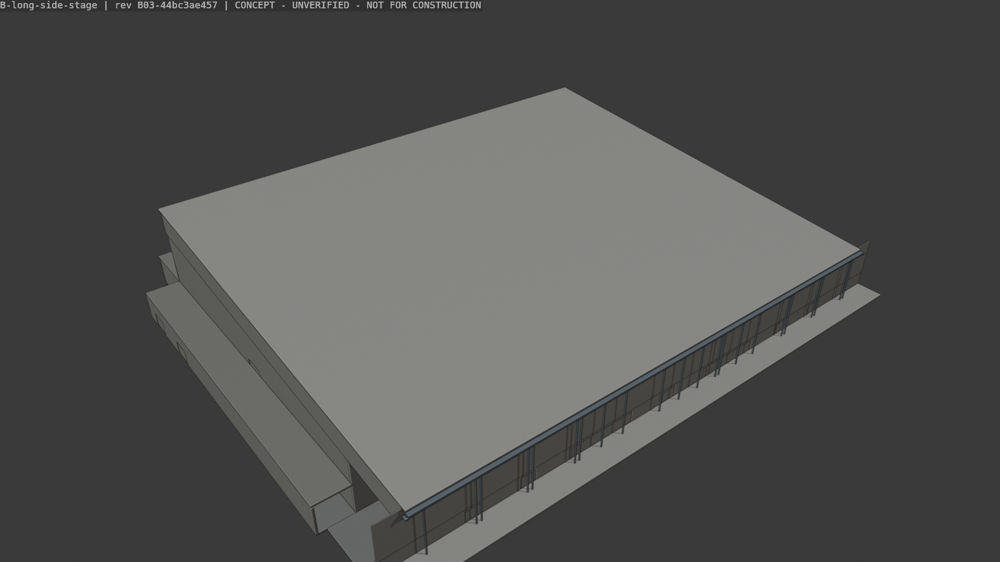
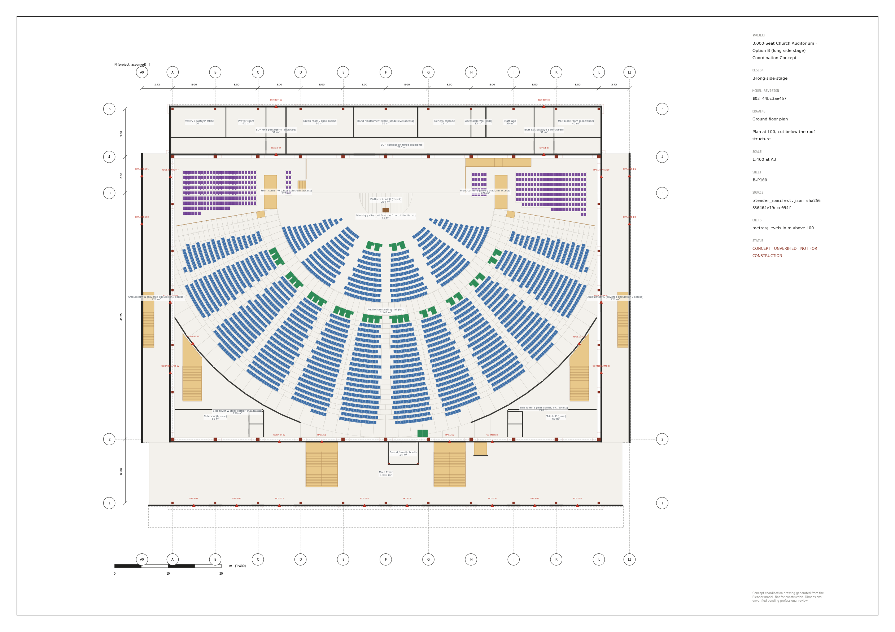
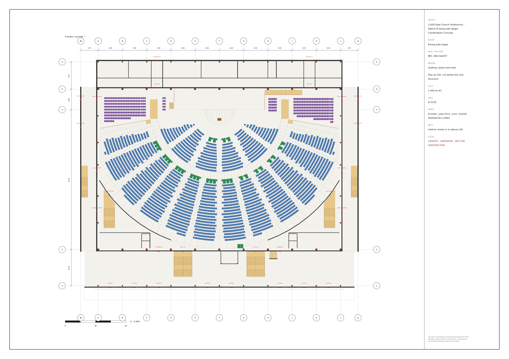
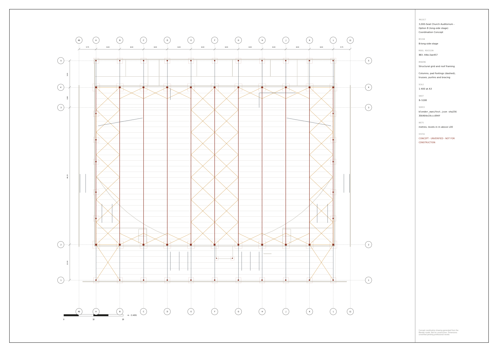
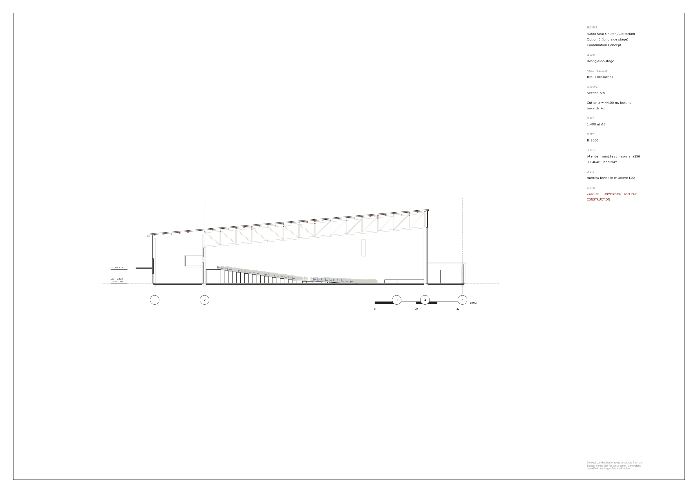
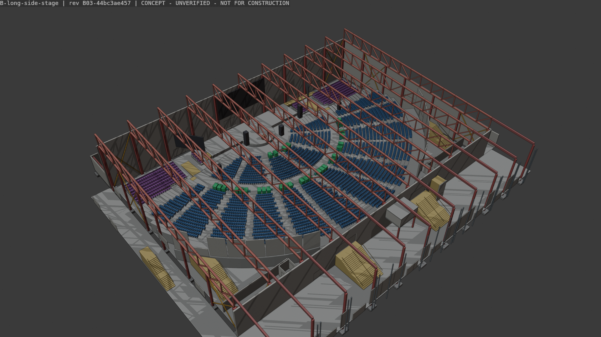
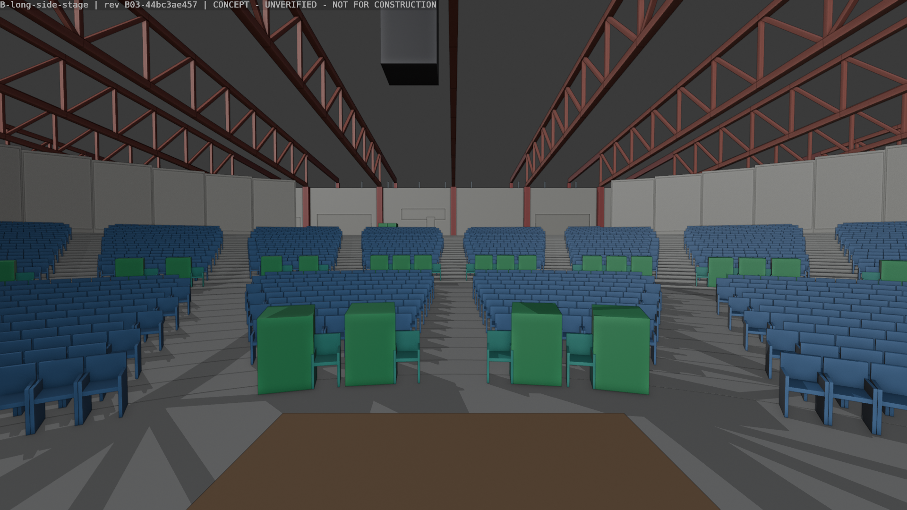
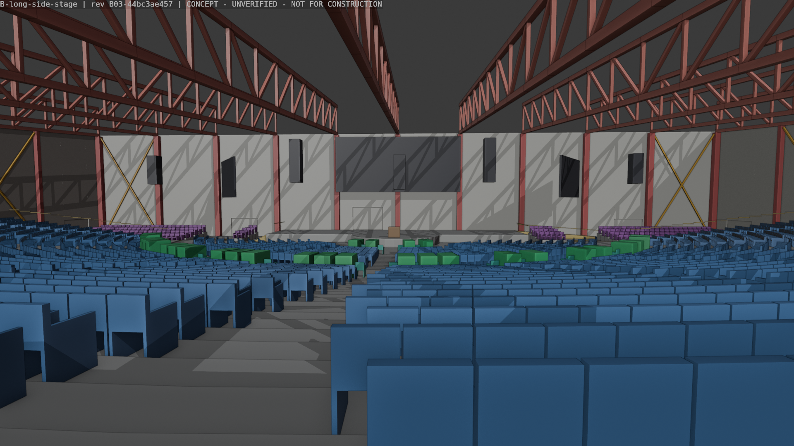
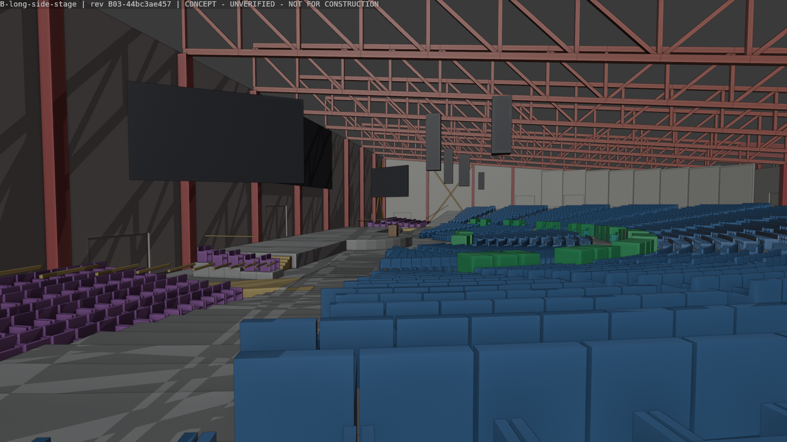
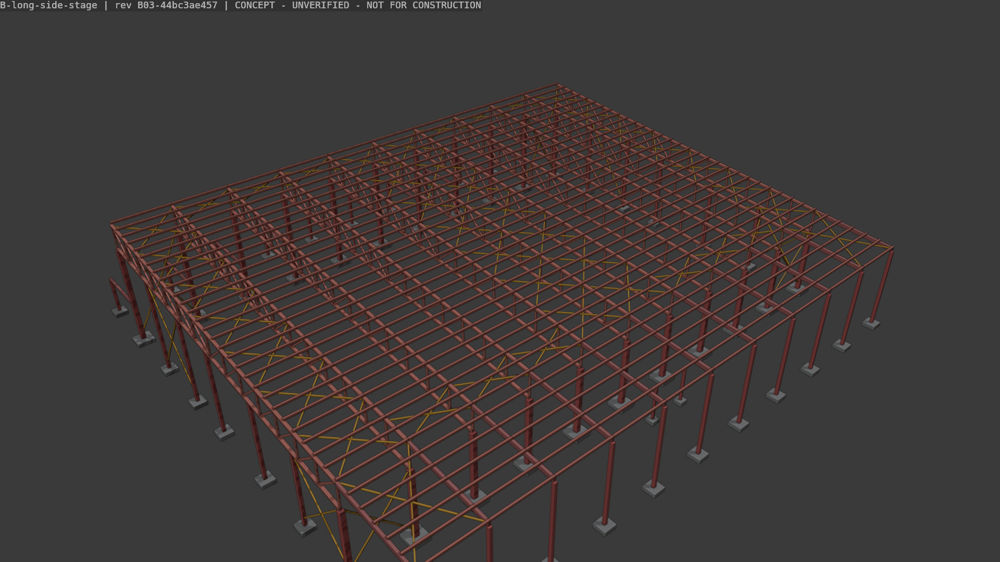

Design ID B-long-side-stage · model revision B03-44bc3ae457 · Zimbabwe (site not identified) · 2026-11-02
CONCEPT — UNVERIFIED · NOT FOR CONSTRUCTION. Reviewer scores are QA metrics, not certification.
| Design ID | B-long-side-stage |
| Model revision | B03-44bc3ae457 |
| Manifest SHA-256 | 356464e19ccc094f284d8ae1a5c64159700c0fbf518a867ca8b60c1ce1169c83 |
| Blender | 5.2.3 LTS |
| Units | metres |
| Status | CONCEPT - UNVERIFIED - NOT FOR CONSTRUCTION |
| Build | .venv/Scripts/python tools/build.py --design B --iteration N |
| Measurement provenance | Every figure, table and drawing in this document is generated from this design's Blender manifest, its verified reports (geometry_checks, blend_verification, ifc_validation) and comparisons/compare.py run on the same manifest. |
| Source | SHA-256 (16) |
|---|---|
| config/params.json | f81053ac3ae5b801 |
| src/layout.py | 25bdca4a02ee1d70 |
| src/reports.py | 5af693842eefe319 |
| src/drawings.py | 0c8ec145e5044f22 |
| tests/test_layout.py | e8b23aba493651eb |
| ../../shared/bim/geometry.py | e24a0b2f94edac55 |
| ../../shared/bim/build_blender.py | 95c6a9deb318822e |
| ../../shared/bim/verify_blend.py | a8b887a647d43a18 |
| ../../shared/bim/export_ifc.py | 63e72c166381e548 |
| ../../shared/bim/validate_ifc.py | afc360f18265ebdb |
| ../../shared/drawings/sheets.py | e08e3a20e6083ee3 |
| ../../shared/pipeline.py | 99b11afba30aadd2 |
| ../../shared/render_views.py | 78894ec01a471503 |
The platform stands on the middle of the long north wall. 3,000 seats sit in a wide, shallow fan of 32 concentric rows facing the platform focus; one mono-pitch roof covers foyer and hall.
Measured by comparisons/compare.py from this design's manifest (identical code for both options).
| Measure | Value |
|---|---|
| Congregation seats (verified: layout, .blend, IFC, CSV) | 3000 |
| Rows | 32 |
| Eye-to-pulpit distance mean / median / max (m) | 28.57 / 30.51 / 40.13 |
| Seats within 20 m / 30 m of the pulpit | 20% / 48% |
| Head turn to pulpit mean / max (deg) | 4.0 / 18.6 |
| Max bearing from the pulpit (deg) | 80.0 |
| Min C-value n1 / n2 (from chair objects) | 0.0602 / 0.1203 |
| Footprint (m) | 91.8 x 79.55 |
| Hall floor area / per seat (m2) | 2927.9 / 0.976 |
| Hall air volume / per seat (m3) | 40190 / 13.4 |
| Roof area (sloped, m2) / top (m) | 6844.1 / 17.78 |
| Trusses / span (m) | 11 / 53.05 |
| Columns / pad footing concrete (m3) | 56 / 140.0 |
| Hall exits / door width (m) | 10 / 40.8 |
| Wheelchair spaces / lifts | 30 / 1 |
| Choir chairs / platform area (m2) | 412 / 234.1 |
| Source | Result |
|---|---|
| Layout engine checks | {"PASS": 31, "FAIL": 0, "WARN": 2} |
| Re-opened .blend checks | {"PASS": 17, "FAIL": 0, "WARN": 0} |
| IFC validation | {"PASS": 21, "FAIL": 0, "WARN": 0} |




Workbench renders of the saved model, stamped with the revision.





reports/row_schedule.csv
| row | section | seats | floor | rise | radius |
|---|---|---|---|---|---|
| 1 | front | 14 | 0.0 | 0.0 | 9.8 |
| 2 | front | 16 | 0.005 | 0.005 | 10.75 |
| 3 | front | 34 | 0.035 | 0.03 | 11.7 |
| 4 | front | 36 | 0.06 | 0.025 | 12.65 |
| 5 | front | 44 | 0.105 | 0.045 | 13.6 |
| 6 | front | 46 | 0.145 | 0.04 | 14.55 |
| 7 | front | 56 | 0.2 | 0.055 | 15.5 |
| 8 | front | 58 | 0.255 | 0.055 | 16.45 |
| 9 | front | 68 | 0.315 | 0.06 | 17.4 |
| 10 | front | 70 | 0.38 | 0.065 | 18.35 |
| 11 | front | 76 | 0.45 | 0.07 | 19.3 |
| 12 | front | 78 | 0.525 | 0.075 | 20.25 |
| 13 | rear | 88 | 0.76 | 0.235 | 25.1 |
| 14 | rear | 88 | 0.895 | 0.135 | 26.05 |
| 15 | rear | 98 | 1.03 | 0.135 | 27.0 |
| 16 | rear | 100 | 1.165 | 0.135 | 27.95 |
| 17 | rear | 110 | 1.3 | 0.135 | 28.9 |
| 18 | rear | 102 | 1.435 | 0.135 | 29.85 |
| 19 | rear | 122 | 1.57 | 0.135 | 30.8 |
| 20 | rear | 114 | 1.705 | 0.135 | 31.75 |
| 21 | rear | 134 | 1.84 | 0.135 | 32.7 |
| 22 | rear | 126 | 1.975 | 0.135 | 33.65 |
| 23 | rear | 146 | 2.11 | 0.135 | 34.6 |
| 24 | rear | 136 | 2.245 | 0.135 | 35.55 |
| 25 | rear | 148 | 2.38 | 0.135 | 36.5 |
| 26 | rear | 148 | 2.515 | 0.135 | 37.45 |
| 27 | rear | 160 | 2.65 | 0.135 | 38.4 |
| 28 | rear | 158 | 2.785 | 0.135 | 39.35 |
| 29 | rear | 144 | 2.92 | 0.135 | 40.3 |
| 30 | rear | 140 | 3.055 | 0.135 | 41.25 |
| 31 | rear | 102 | 3.19 | 0.135 | 42.2 |
| 32 | rear | 40 | 3.325 | 0.135 | 43.15 |
reports/exit_schedule.csv, geometry_checks.json (placeholder factors, not code values)
| exit_id | level | wall | clear_width | capacity_width | assigned_occupants | required_width_placeholder | final_exit |
|---|---|---|---|---|---|---|---|
| DR-HALL-W-FRONT | L00 | W | 3.36 | 3.36 | 129 | 0.645 | DR-EXT-AMB-W1 |
| DR-HALL-W-REAR | L02 | W | 3.36 | 2.0 | 138 | 1.035 | DR-EXT-AMB-W2 |
| DR-HALL-E-FRONT | L00 | E | 3.36 | 3.36 | 66 | 0.33 | DR-EXT-AMB-E1 |
| DR-HALL-E-REAR | L02 | E | 3.36 | 2.0 | 166 | 1.245 | DR-EXT-AMB-E2 |
| DR-HALL-S1 | L02 | S | 5.6 | 5.6 | 565 | 4.237 | DR-EXT-S03 |
| DR-HALL-S2 | L02 | S | 5.6 | 5.6 | 581 | 4.357 | DR-EXT-S05 |
| DR-STAGE-W | L00 | N | 3.44 | 3.44 | 597 | 2.985 | DR-EXT-BOH-W |
| DR-STAGE-E | L00 | N | 3.44 | 3.44 | 394 | 1.97 | DR-EXT-BOH-E |
| DR-HALL-ARC-W | L02 | arc-W | 3.36 | 3.36 | 448 | 3.36 | DR-EXT-AMB-W2 |
| DR-HALL-ARC-E | L02 | arc-E | 3.36 | 3.36 | 448 | 3.36 | DR-EXT-AMB-E2 |
| Egress metric (own engine) | Value |
|---|---|
| occupants_assigned_in_hall | 3532 |
| seats | 3000 |
| wheelchair | 30 |
| companions | 30 |
| choir | 412 |
| platform | 60 |
| boh_staff | 30 |
| building_total_occupants | 3562 |
| hall_exits | 10 |
| total_hall_exit_clear_width | 35.52 |
| total_required_width_placeholder | 23.52 |
| max_travel_hall | 45.4 |
| max_travel_total | 58.51 |
| mean_travel_hall | 19.88 |
| max_travel_hall_to_nearest_exit | 45.4 |
| count_nearest_travel_over_flag | 459 |
| count_travel_hall_over_flag | 535 |
| count_travel_total_over_flag | 0 |
comparisons/reviews/iter-03/B-*.json — QA scores, not certification.
| Discipline | Score /10 |
|---|---|
| accessibility | 7.0 |
| acoustics_av | 6.5 |
| aesthetics | 5.0 |
| architecture | 6.3 |
| church_functionality | 7.2 |
| constructability_maintenance | 6.5 |
| cost_drivers | 5.0 |
| life_safety | 5.5 |
| structural_engineering | 7.0 |
| Severity | Discipline | Finding |
|---|---|---|
| MAJOR | church_functionality | Status of iter-02 B2-ARC-03 (ministry floor): now a named space, but too small. SPC-SP02M is only 43.3 m2 and 2.5 m deep. That is about one altar-call row for a 3,000-seat congregation, about a third of A's 117 m2 SP-02F, and smaller than the about 90 m2 ring |
| MAJOR | church_functionality | Status of iter-02 B2-ARC-01 (choir): mostly addressed. The choir now faces the congregation on tiers rising to the stage wall (412 chairs, risers to +0.80), so it is visible and correctly oriented. However, most of it is still in the far front corners. The mai |
| MAJOR | architecture | Plan efficiency and entry are unresolved, and some figures got worse. The footprint has grown to 7,303 m2 (33% more than A's 5,473 m2 for the same 3,000 seats), and the truss span to 53.05 m. About two-thirds of the congregation still arrives and leaves at the |
| MAJOR | life_safety | This is a persistent weakness and was not addressed: two thirds of hall occupants still leave at +3.325 m and go down stairs (2,346 of 3,532, 66.4 %). Widening the side-foyer stairs only moved the bottleneck to the door. DR-HALL-ARC-W/E now carry 448 occupants |
| MAJOR | life_safety | Travel distances have got worse with each iteration. 535 occupants are now beyond the 30 m in-hall placeholder flag (B01 406, B02 486), and the maximum is 45.4 m (B01 41.6, B02 43.73). The direct seat-to-exit maximum is 32.8 m and the mean 16.15 m, against Opt |
| MAJOR | cost_drivers | Regression in cost drivers from the iter-03 changes (node-aligned purlins, deeper trusses, client-requested higher bearing). Linear roof steel is now ~6,384 m, about 2.05x Option A's 3,106 m (A's purlins are understated; see A review A-STR-01). Purlins alone a |
| MINOR | church_functionality | Status of iter-02 B2-ARC-05 (booth): partly addressed. The floor top is now +4.22, 0.895 m above the rear passage (+3.325), so the sightline over standing people is fixed. The booth is still 3.3 m east of the axis (x 40.4-46.2) and only 24.4 m2. |
| MINOR | church_functionality | Side-on seating is essentially unchanged since B02: 232 seats more than 75 deg off the pulpit (B02 228), max bearing 80 deg, and 1,564 seats rely on screens. With only 3 screens (A has 6), screen coverage for the side blocks is unverified. |
| MINOR | aesthetics | Status of iter-02 B2-ARC-07 (massing): somewhat improved but still weak. The taller roof (top +17.78 m) gives the interior more generous volume (13.4 m3/seat against 10.05), and the foyer glazing rose to 159.9 m2. But the exterior is still a single huge mono-p |
| MINOR | life_safety | The BOH escape passages are now properly enclosed, which closes iter-01 B-CB-01 and iter-02 B02-LS-03. A few details remain. The DR-BOH-X fire doors are FireExit=False with 'Single/double swing (TBC)' and an unconfirmed rating. Staff in the BOH also depend on |
| MINOR | accessibility | The two L02 refuge spaces sit in the open hall on the rear landing, about 1-2 m from the head of the east foyer stair, where about 580 people pass (DR-HALL-S2). They have no enclosure, are not on a protected route, and have no communication. The status text ad |
| MINOR | accessibility | All 60 wheelchair users and companions are still assigned only to the two stage-side exits. Those routes are now enclosed and step-free, but there is no assigned alternative if one is blocked, even though the front-corner grade exits are lightly loaded (129 an |
| MINOR | acoustics_av | The concave arc facets now carry modelled panels with a performance requirement, which deals with the focusing risk at concept level. Some parts of the rear wall are still bare. The door facets (-07) are untreated. The panels stop at about +8.7 to +10.1 m, bel |
| MINOR | acoustics_av | Raising the roof increased the volume to 13.4 m3 per seat (40,190 m3), up from 10.05. This is still less than Option A's 16.6, but it gives up part of B's earlier acoustic advantage for amplified worship, and there is still no RT estimate. The 16 x 7 m main sc |
| MINOR | structural_engineering | Taller supports raise slenderness and wind demands that the concept does not address. The grid-1 facade columns are 0.40 m placeholders standing ~11.75 m from pad to top, with masonry only to +6.0 and cladding/louvres above. The side-wall posts are 0.40 m and |
| MINOR | constructability_maintenance | Maintenance and erection regressions from the raised roof. The single eaves gutter rose from +7.93 to +11.26..11.61 m, ~7.7 m above the canopy, so it now needs a MEWP or a permanent ladder and anchor line rather than access from the canopy. The overflow weirs |
| MINOR | structural_engineering | No bottom-chord lateral restraint (fly braces or ties) is modelled for uplift reversal on a 53.05 m simply supported truss under a ~5,500 m2 lightweight roof. Lateral load paths now look complete in concept: eaves girders with chords along grids 2 and 4, roof |
| MINOR | structural_engineering | Stale structural text: assumption B-02 says 'about 51 m, 3.0 m deep' and structure.proposal says '~50 m ... 3.0 m deep', but the model has a 53.05 m span and 3.5 m depth. structure.iteration3 says 'bearing raised to +9.5 m', while the model's truss bottom chor |
# Option B (long-side stage) - revision history Revision ID = `B<nn>-<first 10 hex of SHA-256 over the declared sources>` (design.json `sources`, incl. the shared modules). Every revision's outputs AND exact sources are archived in `archive/b-<nn>/` (rebuildable with tools/build.py). | Revision | Date | Kind | Change | |---|---|---|---| | B01-5f175dba4d | 2026-11-02 | first complete model | Wide shallow fan, 31 rows, thrust platform on the long wall, mono-pitch roof on 11 continuous trusses, ambulatories, two 6 m foyer stairs. Pre-release design iterations (seating study, clash and egress fixes) are recorded in the commit history and config `_notes`. | | B02-3c1014f7b9 | 2026-11-02 | review iteration 2 | Response to iter-01 review (B 5.30/10, 1 critical blocker): BOH exit passages to north-wall final exits (blocker) + discharge-route check; stair flights <= 12 risers with landings, centre rails; 5 m ambulatories; fan +-80 deg; 4.5 m ministry floor, thrust R 4.5 m; choir on risers (377); centre-block front wheelchair places, cross-end ramps, grade-only wheelchair exits; trusses simply supported + foyer rafters, eaves wind girders, Pratt webs, larger gutter; 5 deg rear facets. | | B03-44bc3ae457 | 2026-11-02 | review iteration 3 (final) | Response to iter-02 review (B 6.08/10, 0 critical) and client comment "roof too low": truss bearing derived from the rake (>= 5.5 m clear over the rear passage, roof top +17.8 m), 3.5 m deep trusses, purlins on every node/half-panel, foyer bracing, gutter weirs; BOH exit passages enclosed from the stage wall; full-width cross-end ramps; 3.6 m side-foyer stairs (toilet blocks reshaped 17 x 5.5 m); upper-level refuges; acoustic panels on the concave wall; choir facing the congregation on tiers rising to the stage wall (412, client to confirm); platform 30 x 6.5 m + 5 m thrust (234 m2); 2.5 m ministry floor as a named space; booth +0.9 m; 16 x 7 m main screen. |